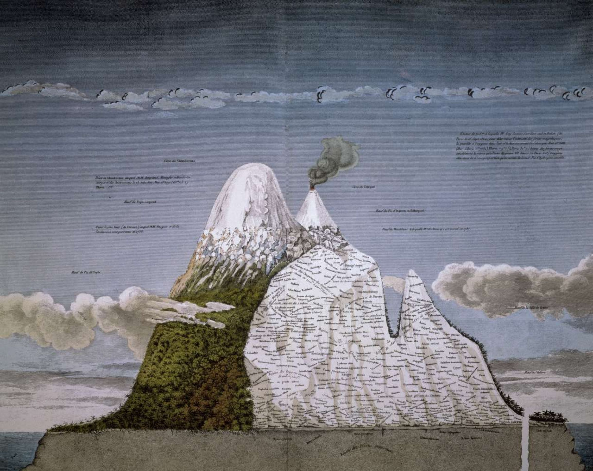

About
ARTWORKS
Writings
Projects
POSTS
About
ARTWORKS
Writings
Projects
POSTS
English
中文
juntao.yang@columbia.edu
ABOUT
ARTWORKS
WRITINGS
PROJECTS
POSTS
PROJECTS
Ongoing Projects

2023 - Present
RESEARCH / WRITINGS / ARTWORKS / TEACHING
Texture of the Earth and Skin We're In
Geological Thinking, Anthropocene Cinema, and the Imaginations Beyond Humanbeing. An ongoing research project exploring the intersection of media geology and planetary aesthetics.
2024 - Present
RESEARCH / ARCHIVE
Immunology between Sacred Beliefs and Local Wars
Scientific-Catholic Colonialism, Multispecies Imaginations, and Chinese BCG Vaccine. Investigating the biopolitical entanglements of immunity and warfare.